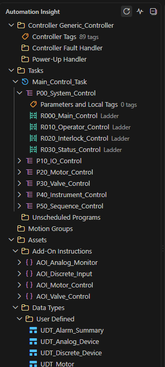
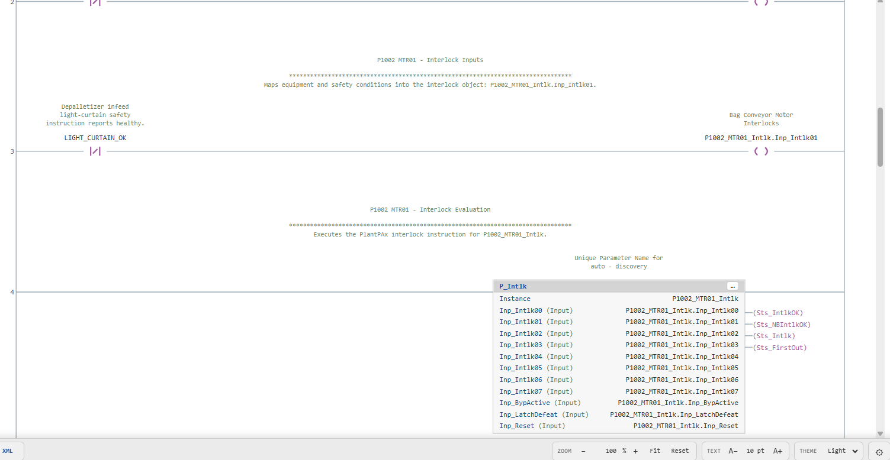
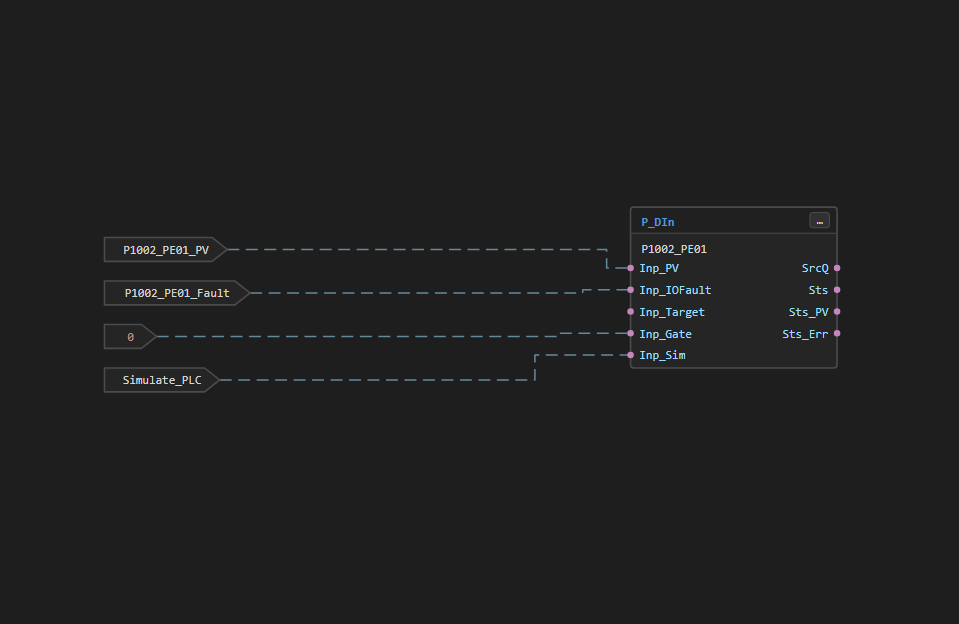
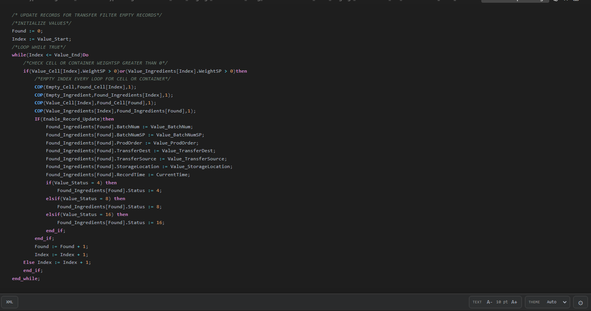
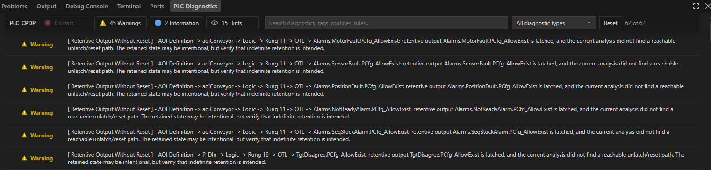

Overview
Automation Insight is an inspection and static-analysis extension
for Rockwell Logix .L5X exports.
Navigate
Browse controller and program tags, standard and safety tasks, programs, routines, AOIs, data types, motion groups, and axes.
Visualize
Open Ladder, Function Block, and Structured Text logic in dedicated viewers.
Analyze
Filter diagnostics by severity, search text, and rule type.
Quick start
- Install the VSIX with Extensions: Install from VSIX….
- Open a
.L5Xor.l5xexport. - Select the PLC-shaped Automation Insight Activity Bar icon.
- Open routines from the Controller Explorer and findings from PLC Diagnostics. Reopening an item focuses its existing tab.
Controller Explorer
The explorer follows the active L5X and exposes Controller, Tasks, Motion Groups, and Assets areas. Context actions include Open, Cross Reference, Open Tags, Open Instruction Logic, Copy Name, and expand/collapse controls. The pulse button opens PLC Diagnostics and indicates when complete analysis is still running.

Logic viewers
The screenshots intentionally mix the built-in Light and Dark appearances. Auto follows the current VS Code appearance.
Ladder Diagram
Scalable SVG with zoom, pan, fit/fixed zoom, configurable text size and density, comment visibility, long-rung wrapping, source navigation, rung diagnostics, breadcrumbs, BOOL state highlighting, and instance-bound AOI logic navigation.

Function Block Diagram
Coordinate-aware rendering of blocks, references, ports, constants, sheets, routed connections, annotations, and AOI definition/instance navigation.

Structured Text
Exported source with readable token styling, indentation, interactive symbols, comments, diagnostics, BOOL state highlighting, and member-aware cross references.

Each view retains its scroll position and display state when tabs are switched. FBD also retains the selected sheet. Diagnostic and cross-reference navigation selects the exact instruction; clicking elsewhere clears the selection.
PLC Diagnostics
The toolbar keeps controller name, Error/Warning/Information/Hint filters, search, diagnostic-type filter, Reset, and visible-result count on one row. Findings are ordered by severity and the running indicator remains visible until complete analysis finishes.

| Severity | Use |
|---|---|
| Error | Investigate first. |
| Warning | Potentially unsafe, suspicious, or ambiguous behavior that may still be intentional. |
| Information | Engineering observation. |
| Hint | Low-severity cleanup or maintainability guidance. |
Multi-location findings expand into navigable source rows. State owned by AOI implementation logic is reported at the internal AOI instruction instead of being duplicated on every invocation rung; caller InOut mappings are still used to prove reset paths.
Themes & settings
Automation Insight provides Auto, Dark, and Light view themes. Auto follows the current VS Code appearance. Search VS Code Settings for Automation Insight to configure viewer defaults.
| Setting | Default |
|---|---|
automationInsight.zoomLevel |
100 |
automationInsight.textSize |
10 |
automationInsight.defaultZoomMode |
fitWidth |
automationInsight.ladderDensity |
standard |
automationInsight.longRungLayout |
wrap |
automationInsight.maxRungWrapLevels |
4 |
automationInsight.showComments |
all |
automationInsight.maxArrayExpansion |
250 |
Studio 5000 instruction help
Automation Insight discovers locally installed Studio 5000 help, preferring the exact controller revision when available and otherwise falling back within the compatible v21–35 or v36+ family.
C:\Program Files (x86)\Rockwell Software\Studio 5000\Logix Designer\ENU
For a nonstandard installation, set
AUTOMATION_INSIGHT_STUDIO_HELP_ROOT and restart VS
Code.
Partial L5X exports
Supported component exports include programs, routines, routine content, AOIs, data types, tags, tasks, and FBD content. Diagnostics are intentionally conservative when project-wide context is absent. Use a full Controller export for the broadest completeness analysis. A natural single-item export opens directly in its matching viewer while preserving native XML access.